Una guía paso a paso para entender regARIMA, SEATS y la serie desestacionalizada del PIB chileno.
R
time-series
economics
spanish
Autor/a
Joshua Kunst
Fecha de publicación
septiembre 1, 2026
Comparar el PIB de un trimestre con el anterior parece sencillo, pero la serie observada mezcla movimientos económicos, patrones estacionales, efectos de calendario y episodios excepcionales. En este post seguimos el recorrido completo del PIB trimestral de Chile dentro de X-13ARIMA-SEATS. La idea no es tratar seas() como una caja negra, sino entender qué ocurre en cada etapa:
observar la serie oficial;
transformarla a logaritmos;
identificar la regresión y su matriz \(X\);
construir la serie linealizada;
entender el ARIMA y sus innovaciones;
separar tendencia, estacionalidad e irregular mediante SEATS y obtener la serie desestacionalizada final;
usar la serie desestacionalizada para medir la variación trimestral y contrastarla con la publicada por el Banco Central;
usar el regARIMA para producir un pronóstico como extensión opcional.
Aunque seas() ejecuta regARIMA y SEATS en una sola llamada, aquí sus resultados se presentan en ese orden conceptual.
¿Qué es X-13ARIMA-SEATS y por qué usarlo?
X-13ARIMA-SEATS es un programa de ajuste estacional desarrollado y mantenido por el U.S. Census Bureau. No es solamente un modelo ARIMA ni una herramienta de pronóstico: es un sistema que reúne en un procedimiento reproducible varias etapas necesarias para hacer comparables periodos consecutivos de una serie económica.
Su flujo combina:
selección de la transformación, por ejemplo niveles o logaritmos;
regresión con errores ARIMA para estimar calendario, feriados y outliers;
identificación y diagnóstico de la dinámica ARIMA;
extensión de los extremos mediante pronósticos cuando es necesaria para los filtros;
descomposición mediante X-11 o SEATS;
producción de la serie desestacionalizada final y sus diagnósticos.
Esto es especialmente útil para el PIB trimestral. La serie observada mezcla la evolución económica con patrones que se repiten durante el año, diferencias de calendario y episodios excepcionales. X-13 intenta evitar que esos efectos se confundan entre sí y entrega como resultado principal una serie apropiada para comparar un trimestre con el anterior:
Entre sus ventajas prácticas se encuentran los regresores de calendario predefinidos, la detección automática de AO, LS y TC, la selección ARIMA, los métodos X-11 y SEATS y los diagnósticos de estacionalidad residual. Además, la especificación puede conservarse y volver a ejecutarse cuando se actualizan los datos.
X-13 no convierte el resultado en una verdad libre de supuestos. La serie desestacionalizada es una estimación latente, puede revisarse al incorporar nuevas observaciones y depende de la transformación, el modelo y las intervenciones seleccionadas. Tampoco identifica las causas económicas de los outliers ni garantiza ser el mejor método de pronóstico. Su principal aporte es ofrecer un marco especializado, diagnosticable y replicable para el ajuste estacional. Véanse la descripción oficial del U.S. Census Bureau y el manual de X-13ARIMA-SEATS.
1. Configuración
La credencial del Banco Central se lee desde el entorno. No debe escribirse directamente en este documento. El paquete bcchr se obtiene desde su repositorio de GitHub, ya que no está publicado en CRAN.
Código
library(bcchr)library(dplyr)library(ggforce)library(ggfortify)library(ggplot2)library(seasonal)library(tibble)library(tidyr)if(!nzchar(Sys.getenv("BCCH_TOKEN"))){stop(paste("BCCH_TOKEN no está disponible para Quarto.","Guárdelo en ~/.Renviron como BCCH_TOKEN=su_token","y vuelva a iniciar la sesión de R antes de renderizar."), call. =FALSE)}invisible(checkX13())options(bcchr.verbose =FALSE)codigo_pib<-"F032.PIB.FLU.R.CLP.EP18.Z.Z.0.T"codigo_pib_desestacionalizado_bcch<-"F032.PIB.FLU.R.CLP.EP18.Z.Z.1.T"# TRUE permite estudiar una descomposición aditiva en logaritmos.usar_log<-TRUE# Convierte una tabla con date y series en columnas al formato largo de ggplot.series_a_formato_largo<-function(datos){pivot_longer(datos, cols =-all_of("date"), names_to ="serie", values_to ="value")}
2. Serie oficial observada
La única serie directamente observada es el PIB publicado. La tendencia, la estacionalidad, el irregular y la serie desestacionalizada serán estimaciones latentes de X-13.
if(anyDuplicated(pib_original$date)){stop("La serie contiene fechas duplicadas.", call. =FALSE)}if(nrow(pib_original)!=length(seq.Date(min(pib_original$date),max(pib_original$date), by ="3 months"))){stop("La serie contiene trimestres faltantes.", call. =FALSE)}
Código
ggplot(pib_original,aes(x =date, y =value))+geom_line(linewidth =0.7)+labs(title ="PIB trimestral original de Chile", x =NULL, y ="Miles de millones de pesos encadenados")
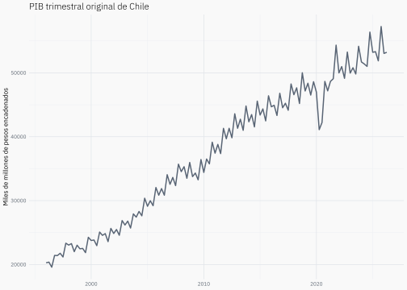
3. ¿Por qué aplicar logaritmos?
Sea \(Y_t\) el PIB en niveles (escala original): la serie observada antes de aplicar logaritmos o diferencias. Definimos:
\[
y_t = \log(Y_t).
\]
El logaritmo convierte relaciones multiplicativas en sumas. Si en niveles la serie se entiende como el producto de tendencia, estacionalidad e irregular, entonces en logaritmos puede escribirse como una suma. Además, una diferencia logarítmica pequeña puede interpretarse aproximadamente como un cambio porcentual.
La transformación se realiza antes de crear el objeto ts. Después se indica a X-13 que no aplique otra transformación.
Código
if(any(pib_original$value<=0)){stop("El logaritmo requiere valores positivos.", call. =FALSE)}pib_modelo_valor<-if(usar_log){log(pib_original$value)}else{pib_original$value}escala_modelo<-if(usar_log){"Logaritmo del PIB"}else{"PIB en niveles (escala original)"}pib_modelo_ts<-stats::ts(pib_modelo_valor, start =c(as.integer(format(pib_original$date[[1]], "%Y")),(as.integer(format(pib_original$date[[1]], "%m"))-1L)%/%3L+1L), frequency =4)pib_modelo_ts
Las dos facetas representan las mismas observaciones. Las escalas verticales se separan porque sus unidades no son comparables: la primera está en niveles y la segunda en logaritmos. Lo importante es observar cómo el logaritmo comprime las variaciones absolutas a medida que aumenta el nivel del PIB. Esto suele ayudar cuando existe heterocedasticidad asociada al nivel: si las fluctuaciones en pesos crecen junto con el tamaño de la economía, el logaritmo las expresa como cambios aproximadamente proporcionales y puede estabilizar la varianza.
Esta transformación no garantiza que desaparezca toda heterocedasticidad. En particular, una varianza condicional cambiante en el tiempo, como la modelada por procesos ARCH o GARCH, debe diagnosticarse posteriormente sobre las innovaciones del modelo.
Código
comparacion_transformacion_ancho<-tibble( date =pib_original$date, `PIB en niveles (escala original)` =pib_original$value, `Logaritmo del PIB` =log(pib_original$value))comparacion_transformacion<-series_a_formato_largo(comparacion_transformacion_ancho)ggplot(comparacion_transformacion,aes(x =date, y =value))+geom_line(linewidth =0.6)+facet_wrap(vars(serie), ncol =1, scales ="free_y")+labs(title ="PIB antes y después de aplicar logaritmos", subtitle ="El logaritmo comprime las variaciones y puede estabilizar su varianza", x =NULL, y =NULL)
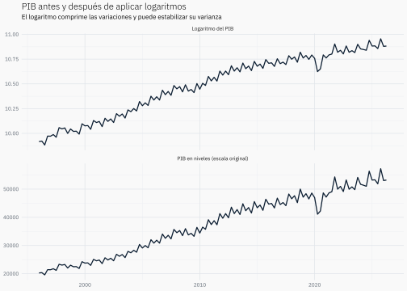
4. Un modelo, dos etapas
La llamada siguiente estima el modelo regARIMA y luego ejecuta SEATS. Se guardan también la matriz de regresores y sus efectos para poder inspeccionar la etapa intermedia.
outliers_detectados<-outlier(modelo, full =TRUE)outliers_detectados
Qtr1 Qtr2 Qtr3 Qtr4
1996 NA NA NA NA
1997 NA NA NA NA
1998 NA NA NA ls1998.4
1999 NA NA NA NA
2000 NA NA NA NA
2001 NA NA NA NA
2002 NA NA NA NA
2003 NA NA NA NA
2004 NA NA NA NA
2005 NA NA NA NA
2006 NA NA NA NA
2007 NA NA NA NA
2008 NA NA NA NA
2009 NA NA NA NA
2010 NA NA NA NA
2011 NA NA NA NA
2012 NA NA NA NA
2013 NA NA NA NA
2014 NA NA NA NA
2015 NA NA NA NA
2016 NA NA NA NA
2017 NA NA NA NA
2018 NA NA NA NA
2019 NA NA NA ls2019.4
2020 NA ls2020.2 ao2020.3 ls2020.4
2021 NA NA ls2021.3 NA
2022 NA NA NA NA
2023 NA NA NA NA
2024 NA NA NA NA
2025 NA NA NA NA
2026 NA NA
El resultado es una serie de etiquetas: deja NA en los periodos normales y muestra el outlier en el trimestre correspondiente. full = TRUE conserva el tipo y la fecha completa, por ejemplo LS2020.2 o AO2020.3; con FALSE mostraría solamente LS o AO.
AO, additive outlier, representa un impacto concentrado en un solo trimestre.
LS, level shift, representa un cambio persistente en el nivel desde una fecha.
TC, temporary change, representa un impacto transitorio que comienza en una fecha y disminuye gradualmente. Su regresor tiene la forma \((\ldots,0,1,\delta,\delta^2,\ldots)\), con \(0<\delta<1\): vale 1 en el periodo del shock y después se aproxima a cero. El coeficiente estimado determina su magnitud y su signo.
X-13 admite los tres tipos, pero este ejercicio busca solamente AO y LS porque se especificó outlier.types = c("ao", "ls"). Para incluir TC habría que agregar "tc" a ese argumento. La codificación exacta de los AO y LS seleccionados y el efecto \(X_{tj}\beta_j\) se muestran una sola vez en la sección 5.2, al inspeccionar la matriz \(X\).
Esta función permite localizar las intervenciones, pero no muestra por sí sola sus coeficientes ni su significancia. Esos resultados aparecen en summary(modelo) y posteriormente en coeficientes_regresion.
Código
serie_observada_outliers<-tibble( date =pib_original$date, value =as.numeric(original(modelo)), evento =toupper(as.character(outliers_detectados)))# Estos desplazamientos controlan solo la posición editorial de las etiquetas.posiciones_etiquetas<-tribble(~evento, ~desplazamiento_anios, ~desplazamiento_rango_y,"LS1998.4", -2, 0.08,"LS2019.4", -3, 0.18,"LS2020.2", -4, -0.10,"AO2020.3", 2, -0.20,"LS2020.4", 2, 0.16,"LS2021.3", 4, 0.10)rango_y_outliers<-diff(range(serie_observada_outliers$value, na.rm =TRUE))outliers_df<-serie_observada_outliers|>filter(!is.na(evento))|>mutate( tipo_evento =case_when(startsWith(evento, "AO")~"Outlier aditivo",startsWith(evento, "LS")~"Cambio de nivel",startsWith(evento, "TC")~"Cambio temporal", .default ="Intervención"))|>left_join(posiciones_etiquetas, by ="evento")|>mutate( desplazamiento_anios =coalesce(desplazamiento_anios, 0), desplazamiento_rango_y =coalesce(desplazamiento_rango_y, 0), label_date =date+round(365.25*desplazamiento_anios), label_value =value+desplazamiento_rango_y*rango_y_outliers)outliers_df
# A tibble: 6 × 8
date value evento tipo_evento desplazamiento_anios
<date> <dbl> <chr> <chr> <dbl>
1 1998-10-01 10.0 LS1998.4 Cambio de nivel -2
2 2019-10-01 10.8 LS2019.4 Cambio de nivel -3
3 2020-04-01 10.6 LS2020.2 Cambio de nivel -4
4 2020-07-01 10.7 AO2020.3 Outlier aditivo 2
5 2020-10-01 10.8 LS2020.4 Cambio de nivel 2
6 2021-07-01 10.8 LS2021.3 Cambio de nivel 4
# ℹ 3 more variables: desplazamiento_rango_y <dbl>, label_date <date>,
# label_value <dbl>
Código
ggplot(serie_observada_outliers,aes(x =date, y =value))+geom_line(linewidth =0.6)+geom_point(data =outliers_df, colour ="#D55E00", size =1.8)+geom_mark_circle( data =outliers_df,aes( group =evento, x0 =label_date, y0 =label_value, label =evento, description =tipo_evento), colour ="#D55E00", fill ="transparent", expand =grid::unit(2.5, "mm"), radius =grid::unit(2.5, "mm"), label.margin =margin(1.5, 1.5, 1.5, 1.5, "mm"), label.minwidth =grid::unit(20, "mm"), label.fontsize =c(8, 7), label.family =plot_font_family, label.fill ="#f9f9f9", label.colour =c("#D55E00", "#5F6873"), label.buffer =grid::unit(12, "mm"), con.colour ="#D55E00", con.size =0.35, con.cap =grid::unit(0.8, "mm"), show.legend =FALSE)+scale_y_continuous(expand =expansion(mult =c(0.05, 0.16)))+labs(title ="PIB observado y outliers detectados por X-13", subtitle ="Los puntos localizan AO y LS; las etiquetas no prueban causalidad", x =NULL, y =escala_modelo)
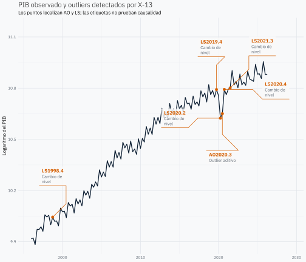
Los puntos están ubicados sobre la serie efectivamente observada. Un AO marca el trimestre puntual en que ocurre el impacto; un LS marca la fecha desde la cual cambia el nivel, aunque visualmente se señale un único punto de inicio.
En esta estimación, los LS cercanos a 2020 son compatibles con una caída y una recuperación escalonada durante la crisis del COVID-19. El AO identifica un movimiento excepcional concentrado en un trimestre. Esta correspondencia es una interpretación económica plausible, no una relación causal demostrada por X-13: el programa detecta quiebres estadísticos y desconoce qué acontecimiento los produjo.
¿X-13 crea un AO y un LS para cada observación?
Conceptualmente, sí: X-13 considera una intervención candidata de cada tipo en casi todas las fechas del intervalo de búsqueda. Con \(n=100\) observaciones y los tipos habilitados en este ejercicio, AO y LS, examina aproximadamente 100 candidatos AO y algo menos de 100 candidatos LS en cada pasada. No puede probar un LS en la primera observación y existen otras restricciones en los extremos cuando busca AO y LS simultáneamente.
Esto no significa que agregue unas 200 columnas simultáneamente a la matriz \(X\) final. Es un conjunto de candidatos:
\[
\mathcal C=\{AO_{t_0},LS_{t_0}:t_0\text{ pertenece al intervalo de búsqueda}\}.
\]
El método predeterminado, addone, realiza la selección iterativamente:
estima el regARIMA vigente;
calcula un estadístico \(t\) para cada tipo y fecha candidata bajo ese modelo;
identifica el candidato con el mayor \(|t|\);
si supera el valor crítico, agrega solamente esa columna a \(X\) y vuelve a estimar todo el regARIMA;
repite la búsqueda hasta que ningún candidato supere el umbral;
realiza una eliminación hacia atrás, retirando los outliers que dejan de ser significativos al estimarlos conjuntamente.
El valor crítico predeterminado aumenta con la cantidad de observaciones examinadas; no utiliza simplemente el umbral usual de 1,96. Por ejemplo, cerca de 100 observaciones el umbral automático es aproximadamente 3,8. Un valor crítico mayor detecta menos intervenciones.
Existe también method = "addall", que agrega en cada pasada todos los candidatos que superan el umbral y depende más de la eliminación posterior. La matriz final contiene únicamente los efectos de calendario y los outliers que sobrevivieron al proceso:
La selección depende del ARIMA utilizado: una dinámica mal especificada puede hacer que observaciones normales parezcan outliers. Además, los valores p del modelo final deben interpretarse como condicionales al proceso de selección, no como si las fechas hubieran sido definidas antes de observar los datos. El procedimiento completo se describe en la sección outlier del manual oficial de X-13ARIMA-SEATS.
El estadístico QS busca autocorrelación en los rezagos estacionales. En una serie trimestral se concentra especialmente en relaciones separadas por cuatro trimestres. Su hipótesis nula es que no existe estacionalidad detectable:
un valor p pequeño entrega evidencia de estacionalidad;
un valor p grande no entrega evidencia suficiente de estacionalidad.
En la salida conviene comparar principalmente:
qsori: serie original; normalmente puede tener un valor p pequeño;
qsrsd: innovaciones regARIMA; se espera un valor p grande;
qssadj: serie desestacionalizada; se espera un valor p grande;
qsirr: componente irregular; también se espera un valor p grande.
Nota
Un valor p grande no demuestra que la estacionalidad sea exactamente cero. Solo indica que el diagnóstico QS no encuentra evidencia estadística suficiente de estacionalidad restante.
5. La regresión con errores ARIMA
5.1 El modelo regARIMA
La ecuación básica es:
\[
y_t = x_t^\top\beta + z_t,
\]
donde \(x_t^\top\beta\) reúne calendario y outliers, mientras que \(z_t\) sigue un proceso ARIMA.
ImportanteNo son dos modelos estimados por separado
La escritura anterior ayuda a interpretar el resultado, pero regARIMA estima conjuntamente los coeficientes de regresión \(\beta\) y los parámetros ARIMA. No realiza primero una regresión OLS y luego ajusta un ARIMA independiente a los residuos obtenidos.
5.2 La matriz de diseño \(X\)
Cada fila de \(X\) corresponde a un trimestre y cada columna a un regresor. Sus valores no siempre son indicadores 0/1: también existen escalones y contrastes centrados.
Código
matriz_x<-series(modelo,"regression.regressionmatrix", reeval =FALSE)|>stats::window( start =stats::start(pib_modelo_ts), end =stats::end(pib_modelo_ts))matriz_x_df<-as_tibble(as.data.frame(matriz_x))|>mutate(date =pib_original$date, .before =1)matriz_x_df
Las principales codificaciones se interpretan así:
AO es un outlier aditivo puntual: \(AO_t=\mathbb{1}(t=t_0)\). Vale 1 únicamente en el trimestre afectado.
LS es un cambio permanente de nivel: \(LS_t=-\mathbb{1}(t<t_0)\). Vale -1 antes del cambio y 0 desde la fecha.
Leap.Year compara febrero con su duración promedio de 28,25 días. Toma 0.75 en el primer trimestre de un año bisiesto, -0.25 en los demás primeros trimestres y 0 fuera del primer trimestre.
Weekday es un contraste entre días hábiles y fines de semana dentro del trimestre. No significa que la serie sea semanal.
Para Leap.Year, el contraste queda centrado porque:
\[
0.75 - 0.25 - 0.25 - 0.25 = 0.
\]
De esta manera no introduce por sí solo un cambio en el nivel promedio de largo plazo. Las definiciones completas se encuentran en el manual oficial de X-13.
Código
matriz_x_larga<-series_a_formato_largo(matriz_x_df)ggplot(matriz_x_larga,aes(x =date, y =value))+geom_hline(yintercept =0, colour ="grey80")+geom_step(linewidth =0.5)+facet_wrap(vars(serie), ncol =2, scales ="free_y")+labs(title ="Variables de la matriz X del regARIMA", subtitle ="LS = cambio permanente; AO = pulso 0/1; calendario = contraste", x =NULL, y ="Valor de X")
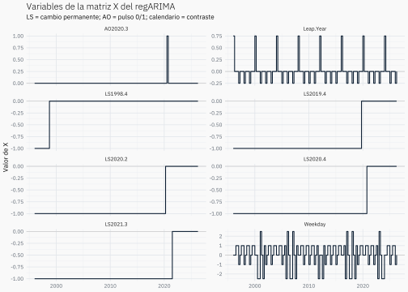
5.3 Los coeficientes y el efecto \(X\beta\)
El efecto total de la regresión es:
\[
X\beta = \sum_{j=1}^{k}x_j\beta_j.
\]
Si existen \(T\) trimestres y \(k\) regresores, sus dimensiones son:
En R, %*% realiza esa multiplicación matricial. El operador * no serviría para esta identidad porque multiplica elementos uno a uno y no suma las contribuciones de cada fila.
Importante%*% no estima beta
Los coeficientes \(\beta\) ya fueron estimados conjuntamente con el ARIMA por X-13. La operación matriz_x %*% beta solo reconstruye el efecto de regresión que esos coeficientes producen en cada trimestre.
Por ejemplo, si en un trimestre una fila de \(X\) contiene Weekday = 1, LS = -1 y AO = 0, y sus coeficientes son 0.002, -0.05 y -0.15, el efecto es:
X-13 entrega tanto \(X\beta\) como la serie después de retirarlo. Las tablas se recortan al periodo observado porque X-13 también construye valores para los periodos usados en sus extensiones de pronóstico.
Código
efectos_regarima<-series(modelo,"estimate.regressioneffects", reeval =FALSE)|>stats::window( start =stats::start(pib_modelo_ts), end =stats::end(pib_modelo_ts))comprobacion_x_beta<-tibble( date =pib_original$date, `Efecto X beta reconstruido` =as.numeric(as.matrix(matriz_x)%*%beta), `X beta informado por X-13` =as.numeric(efectos_regarima[, "Total.Reg"]))comprobacion_x_beta
Efecto X beta reconstruido reproduce manualmente la operación \(X\beta\). X beta informado por X-13 es el efecto total guardado por el programa. Si ambas columnas coinciden, se confirma que las columnas de \(X\), el orden de \(\beta\) y los efectos extraídos de X-13 están correctamente alineados.
5.4 ¿Qué es la serie linealizada?
Al despejar \(z_t\) de la ecuación regARIMA obtenemos:
\[
z_t = y_t - x_t^\top\beta.
\]
Se resta \(X\beta\) para neutralizar temporalmente efectos identificables que podrían confundirse con la estacionalidad: calendario, cambios de nivel y outliers. No significa que se elimine información al azar; se construye una serie contrafactual sin esos efectos determinísticos.
Nota¿Qué significa contrafactual?
Un contrafactual representa lo que el modelo estima que habría ocurrido bajo un escenario hipotético distinto del observado. En este caso responde:
¿Cómo habría evolucionado el PIB si no hubiera recibido los efectos de calendario y outliers representados por \(X\beta\)?
La serie contrafactual no fue observada: se obtiene como \(z_t=y_t-x_t^\top\beta\). Tampoco constituye por sí sola una estimación causal; depende de las variables, fechas y supuestos incluidos por el modelo. Aquí se utiliza como una construcción estadística para que esos efectos no se confundan con la estacionalidad que SEATS debe estimar.
Como \(y_t=\log(Y_t)\), la resta en logaritmos equivale a una división en niveles:
La columna Reg.Resids tiene un nombre potencialmente confuso: contiene los residuos de retirar la regresión, es decir, la serie linealizada. No contiene las innovaciones finales del ARIMA.
preajuste_regarima_ancho<-tibble( date =pib_original$date, `Original usada por X-13` =as.numeric(original(modelo)), `Efectos de regresión` =as.numeric(efectos_regarima[, "Total.Reg"]), `Linealizada = Original - efectos de regresión` =as.numeric(pib_linealizado))preajuste_regarima<-series_a_formato_largo(preajuste_regarima_ancho)|>mutate( serie =factor(serie, levels =c("Original usada por X-13","Linealizada = Original - efectos de regresión","Efectos de regresión")))preajuste_regarima
# A tibble: 366 × 3
date serie value
<date> <fct> <dbl>
1 1996-01-01 Original usada por X-13 9.92
2 1996-01-01 Efectos de regresión 0.102
3 1996-01-01 Linealizada = Original - efectos de regresión 9.81
4 1996-04-01 Original usada por X-13 9.92
5 1996-04-01 Efectos de regresión 0.0942
6 1996-04-01 Linealizada = Original - efectos de regresión 9.83
7 1996-07-01 Original usada por X-13 9.88
8 1996-07-01 Efectos de regresión 0.0949
9 1996-07-01 Linealizada = Original - efectos de regresión 9.79
10 1996-10-01 Original usada por X-13 9.97
# ℹ 356 more rows
Código
ggplot(preajuste_regarima,aes(x =date, y =value))+geom_hline( data =filter(preajuste_regarima,serie=="Efectos de regresión")|>distinct(serie)|>mutate(yintercept =0),aes(yintercept =yintercept), inherit.aes =FALSE, colour ="grey70")+geom_line(linewidth =0.6)+facet_wrap(vars(serie), ncol =1, scales ="free_y")+labs(title ="Preajuste regARIMA antes de SEATS", subtitle ="Escalas verticales independientes; el efecto de regresión aparece abajo", x =NULL, y =escala_modelo, caption ="La línea cero se muestra solo para los efectos de regresión")
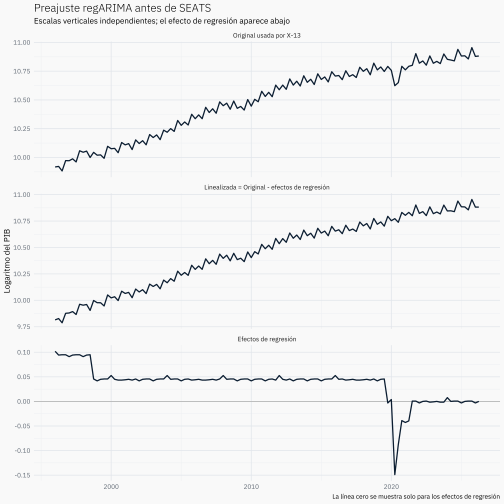
Los paneles tienen la misma altura, pero usan escalas verticales independientes. Esto permite ver la forma temporal de cada serie; no corresponde comparar directamente la amplitud visual entre paneles. El efecto de regresión queda al final porque es el término que se resta de la serie original para construir la linealizada.
La linealización no desestacionaliza la serie. Por construcción, este contrafactual elimina solamente los efectos modelados en \(X\beta\), como calendario y outliers, y debe conservar el componente estacional \(S_t\). SEATS lo estimará y retirará recién en el paso siguiente. Las dos líneas se separan especialmente donde existen cambios de nivel u outliers; su diferencia es exactamente \(X\beta\).
Código
comparacion_original_linealizada_ancho<-tibble( date =pib_original$date, `log(PIB) observado` =as.numeric(original(modelo)), `Serie linealizada` =as.numeric(pib_linealizado))comparacion_original_linealizada<-series_a_formato_largo(comparacion_original_linealizada_ancho)ggplot(comparacion_original_linealizada,aes( x =date, y =value, colour =serie, linetype =serie))+geom_line(linewidth =0.7)+labs(title ="log(PIB) observado y serie linealizada", subtitle ="El contrafactual retira X beta, no la estacionalidad", x =NULL, y =escala_modelo, colour =NULL, linetype =NULL)
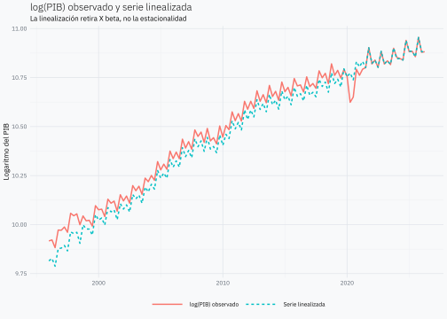
Nota¿Por qué ambas series coinciden al final y no al comienzo?
La explicación está en la codificación de los cambios de nivel. Para un LS en \(t_0\), X-13 utiliza:
El coeficiente negativo indica que el nivel posterior es 0.05 log-puntos menor que el anterior. La linealización lleva el tramo anterior al nivel del régimen posterior; por eso aparece debajo de la observada antes del cambio y coincide con ella después.
Cuando existen varios LS, cada columna deja de contribuir al cruzar su propia fecha. Después del último cambio de nivel todas las columnas LS valen cero. Si los demás efectos de regresión también son pequeños, las dos líneas terminan casi superpuestas. Esto es una convención de referencia: el contrafactual queda anclado al régimen más reciente, no significa que los outliers solo afecten al pasado.
Un AO funciona distinto: solo separa las líneas durante el trimestre puntual en que su columna vale 1.
5.5 ¿Para qué se usa el ARIMA después de linealizar?
La serie linealizada ya fue obtenida en el paso anterior:
\[
z_t=y_t-x_t^\top\beta.
\]
Este paso no vuelve a construirla ni genera otra serie corregida. El ARIMA describe la dependencia temporal que todavía existe en \(z_t\): cuánto ayuda su propio pasado a explicar su valor actual. Al aplicar esa dinámica quedan las innovaciones \(\varepsilon_t\), es decir, la información nueva que el pasado del modelo no pudo anticipar.
El propósito es doble:
comprobar que las innovaciones se parezcan a ruido blanco, como diagnóstico de que el ARIMA capturó adecuadamente la dependencia temporal;
entregar a SEATS la estructura ARIMA que utilizará para estimar tendencia, estacionalidad e irregular.
Por tanto, la secuencia conceptual es \(y_t \rightarrow z_t \rightarrow
\varepsilon_t\): primero se retira \(X\beta\), después se modela la dinámica de la serie resultante. La estimación de \(\beta\) y del ARIMA sí ocurre conjuntamente dentro de regARIMA; esta secuencia solo sirve para leer el resultado.
Código
residuos_regarima<-residuals(modelo)# La diferenciación ARIMA puede dejar sin innovación el primer trimestre. Los# índices ts permiten alinear las 121 innovaciones con los 122 datos originales.residuos_df<-tibble( date =pib_original$date, periodo =as.numeric(stats::time(pib_modelo_ts)))|>left_join(tibble( periodo =as.numeric(stats::time(residuos_regarima)), value =as.numeric(residuos_regarima)), by ="periodo")|>select(-all_of("periodo"))residuos_df
# A tibble: 122 × 2
date value
<date> <dbl>
1 1996-01-01 NA
2 1996-04-01 0.00157
3 1996-07-01 -0.00166
4 1996-10-01 -0.00325
5 1997-01-01 0.0123
6 1997-04-01 0.00137
7 1997-07-01 0.0115
8 1997-10-01 0.00530
9 1998-01-01 -0.00458
10 1998-04-01 -0.00585
# ℹ 112 more rows
Aquí residuals(modelo) devuelve las innovaciones del modelo completo. El primer trimestre puede quedar como NA debido a la diferenciación ARIMA; no es una observación faltante del PIB.
Las innovaciones deberían fluctuar alrededor de cero y no mostrar autocorrelaciones persistentes.
Código
ggplot(residuos_df,aes(x =date, y =value))+geom_hline(yintercept =0, colour ="grey60")+geom_line(linewidth =0.6)+labs(title ="Innovaciones del modelo regARIMA", subtitle ="Deben fluctuar alrededor de cero sin patrones persistentes", x =NULL, y ="Innovación")
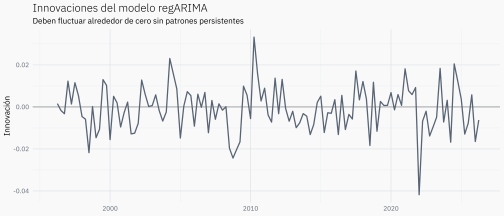
Código
acf_innovaciones<-stats::acf(stats::na.omit(residuos_regarima), plot =FALSE)autoplot(acf_innovaciones)+labs( title ="Autocorrelación de las innovaciones regARIMA", subtitle ="Las barras deberían permanecer dentro de las bandas de confianza", x ="Rezago", y ="Autocorrelación")
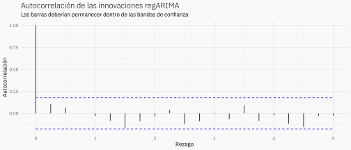
NotaInnovación regARIMA e irregular de SEATS no son lo mismo
residuals(modelo) devuelve \(\varepsilon_t\), el error de predicción del regARIMA. irregular(modelo) devuelve \(I_t\), una componente latente de la descomposición realizada posteriormente por SEATS.
6. La descomposición SEATS
SEATS usa el modelo estimado sobre la serie linealizada para separar internamente:
\[
z_t = T_t + S_t + I_t,
\]
donde \(T_t\) es la tendencia, \(S_t\) la estacionalidad e \(I_t\) el irregular. En esa serie sin efectos de regresión, el ajuste estacional elimina \(S_t\):
\[
z_t^{SA}=z_t-S_t=T_t+I_t.
\]
Durante este cálculo, X-13 retira los outliers para impedir que distorsionen la estimación de \(S_t\). Sin embargo, por defecto los reincorpora después: los LS forman parte de la tendencia final y los AO forman parte del irregular final. Por eso final(modelo) conserva esos episodios y no es solamente el irregular ni solamente la tendencia.
Código
pib_desestacionalizado<-final(modelo)pib_tendencia<-trend(modelo)pib_estacional<-series(modelo, "seats.seasonal")pib_irregular<-irregular(modelo)comparacion_original_desestacionalizada_ancho<-tibble( date =pib_original$date, `PIB observado` =as.numeric(original(modelo)), `PIB desestacionalizado` =as.numeric(pib_desestacionalizado))comparacion_original_desestacionalizada<-series_a_formato_largo(comparacion_original_desestacionalizada_ancho)comparacion_original_desestacionalizada
ggplot(comparacion_original_desestacionalizada,aes( x =date, y =value, colour =serie, linetype =serie))+geom_line(linewidth =0.7)+labs(title ="PIB observado y desestacionalizado", subtitle ="Se retira la estacionalidad; los AO y LS se conservan por defecto", x =NULL, y =escala_modelo, colour =NULL, linetype =NULL)
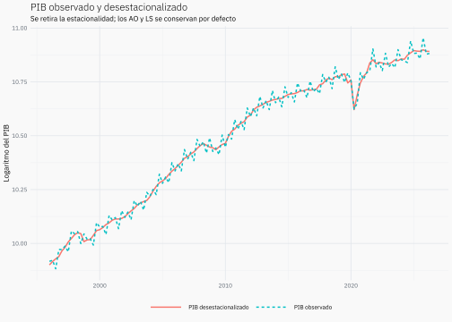
La diferencia regular entre ambas líneas corresponde principalmente a la estacionalidad y a los efectos de calendario retirados. Los episodios extraordinarios permanecen en la serie final mediante el mecanismo descrito al inicio de esta sección. Por eso la corrección de outliers es temporal: facilita la estimación de SEATS, pero no borra la crisis del resultado final.
Código
componentes_ancho<-tibble( date =pib_original$date, `Original ≈ Tendencia + Estacional + Irregular` =as.numeric(original(modelo)), `Desestacionalizada = Tendencia + Irregular` =as.numeric(pib_desestacionalizado), Tendencia =as.numeric(pib_tendencia), `Estacional (alrededor de 0)` =as.numeric(pib_estacional), `Irregular (alrededor de 0)` =as.numeric(pib_irregular))componentes<-series_a_formato_largo(componentes_ancho)componentes
# A tibble: 610 × 3
date serie value
<date> <chr> <dbl>
1 1996-01-01 Original ≈ Tendencia + Estacional + Irregular 9.92
2 1996-01-01 Desestacionalizada = Tendencia + Irregular 9.90
3 1996-01-01 Tendencia 9.90
4 1996-01-01 Estacional (alrededor de 0) 0.00875
5 1996-01-01 Irregular (alrededor de 0) -0.000424
6 1996-04-01 Original ≈ Tendencia + Estacional + Irregular 9.92
7 1996-04-01 Desestacionalizada = Tendencia + Irregular 9.92
8 1996-04-01 Tendencia 9.92
9 1996-04-01 Estacional (alrededor de 0) 0.00573
10 1996-04-01 Irregular (alrededor de 0) 0.000872
# ℹ 600 more rows
La igualdad con la serie original se escribe como aproximación porque el gráfico muestra la componente estacional pura por separado de los efectos de calendario. La identidad desestacionalizada \(=T_t+I_t\) corresponde a las componentes finales de SEATS, que ya contienen los efectos reincorporados descritos anteriormente.
Código
ggplot(componentes,aes(x =date, y =value))+geom_line(linewidth =0.6)+facet_wrap(vars(serie), ncol =2, scales ="free_y")+labs(title ="Descomposición aditiva del PIB", subtitle =escala_modelo, x =NULL, y =NULL)
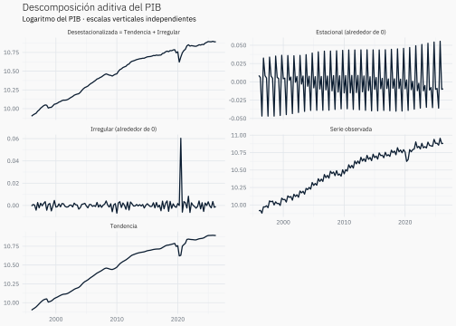
Nota¿Por qué el estacional y el irregular están alrededor de cero?
El PIB fue transformado a logaritmos y X-13 recibió transform.function = "none". Por eso SEATS trabaja de manera aditiva. En una descomposición multiplicativa en niveles, ambos factores fluctuarían alrededor de uno.
ImportanteEl resultado principal de X-13
El objetivo del ajuste estacional se alcanza con pib_desestacionalizado <- final(modelo). Esta es la serie que se usa para comparar trimestres consecutivos sin que el patrón estacional ni los efectos de calendario oculten los movimientos económicos de corto plazo:
\[
y_t^{SA,\,final}=T_t^{final}+I_t^{final}.
\]
No es una tendencia suavizada: todavía contiene el irregular y los episodios extraordinarios reincorporados por X-13. La tendencia sirve para mirar la trayectoria más persistente; la desestacionalizada sirve para analizar el movimiento trimestral observado una vez retirados los efectos recurrentes.
7. Usar la desestacionalizada
Ahora sí tiene sentido comparar cada trimestre con el inmediatamente anterior. Como el modelo trabaja con logaritmos, la variación trimestral exacta se obtiene mediante:
Para cambios pequeños, \(100\left(y_t^{SA}-y_{t-1}^{SA}\right)\) entrega una aproximación en porcentaje. Si no se aplicó el logaritmo, se utiliza directamente \(100\left(y_t^{SA}/y_{t-1}^{SA}-1\right)\).
# A tibble: 244 × 3
date serie value
<date> <chr> <dbl>
1 1996-01-01 Sin ajuste estacional NA
2 1996-01-01 Desestacionalizada NA
3 1996-04-01 Sin ajuste estacional 0.513
4 1996-04-01 Desestacionalizada 1.59
5 1996-07-01 Sin ajuste estacional -3.87
6 1996-07-01 Desestacionalizada 1.25
7 1996-10-01 Sin ajuste estacional 9.39
8 1996-10-01 Desestacionalizada 1.06
9 1997-01-01 Sin ajuste estacional -0.0911
10 1997-01-01 Desestacionalizada 2.74
# ℹ 234 more rows
Código
ggplot(variacion_trimestral_larga,aes(x =date, y =value, colour =serie, linetype =serie))+geom_hline(yintercept =0, colour ="grey60")+geom_line(linewidth =0.65)+labs(title ="Variación trimestral con y sin ajuste estacional", subtitle ="La serie original mezcla el movimiento económico con efectos recurrentes", x =NULL, y ="Variación trimestral (%)", colour =NULL, linetype =NULL)
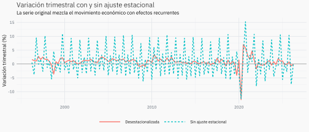
Código
ggplot(variacion_trimestral,aes(x =date, y =efecto_ajuste_pp))+geom_hline(yintercept =0, colour ="grey60")+geom_linerange(aes(ymin =0, ymax =efecto_ajuste_pp), colour ="#586474", linewidth =0.45, alpha =0.75)+geom_point(colour ="#586474", size =0.8)+labs(title ="Diferencia producida por el ajuste estacional", subtitle ="Cada segmento parte de cero; la diferencia no representa un error", x =NULL, y ="Diferencia (puntos porcentuales)")
El segundo gráfico no mide un error de pronóstico ni permite saber cuál valor es “verdadero”. Muestra cuánto cambia la lectura trimestral al retirar los efectos estacionales y de calendario. Las ganancias se evalúan porque desaparecen las oscilaciones trimestrales recurrentes y el diagnóstico qssadj deja de detectar estacionalidad, no simplemente porque disminuya la volatilidad. Por eso resumen_ajuste es descriptivo y no una medida de precisión.
La desestacionalización hace la comparación más homogénea y reproducible, no la convierte en una verdad libre de supuestos. El resultado se puede replicar si se mantienen la misma versión de los datos, la especificación y la versión de X-13. Además, las últimas observaciones pueden revisarse cuando se agregan nuevos datos y vuelven a estimarse el modelo y los factores estacionales.
7.1 Comparación con la serie oficial del Banco Central
La serie oficial ofrece un contraste útil, pero no funciona como una respuesta única contra la cual validar mecánicamente el ajuste estimado. El procedimiento desarrollado aquí aplica un solo regARIMA y SEATS al PIB agregado. Como este análisis no reconstruye las especificaciones, los insumos ni las políticas de revisión de la serie oficial, no se supone que ambas implementaciones sean idénticas.
La serie oficial utilizada es F032.PIB.FLU.R.CLP.EP18.Z.Z.1.T, correspondiente al PIB encadenado, desestacionalizado y con referencia 2018.
Código
pib_desestacionalizado_bcch<-get_series(codigo_pib_desestacionalizado_bcch, from =min(pib_original$date))|>transmute( date =as.Date(date), nivel_bcch =as.numeric(value))|>filter(!is.na(nivel_bcch))|>arrange(date)comparacion_bcch<-tibble( date =pib_original$date, nivel_estimado =if(usar_log){exp(as.numeric(pib_desestacionalizado))}else{as.numeric(pib_desestacionalizado)})|>inner_join(pib_desestacionalizado_bcch, by ="date")|>arrange(date)|>mutate( variacion_estimada_pct =100*(nivel_estimado/lag(nivel_estimado)-1), variacion_bcch_pct =100*(nivel_bcch/lag(nivel_bcch)-1), diferencia_nivel_pct =100*(nivel_estimado/nivel_bcch-1), diferencia_variacion_pp =variacion_estimada_pct-variacion_bcch_pct)comparacion_bcch
comparacion_bcch_larga<-bind_rows(comparacion_bcch|>transmute(date, medida ="Nivel desestacionalizado", `Ajuste estimado con X-13` =nivel_estimado, `Serie oficial del Banco Central` =nivel_bcch),comparacion_bcch|>transmute(date, medida ="Variación respecto del trimestre anterior (%)", `Ajuste estimado con X-13` =variacion_estimada_pct, `Serie oficial del Banco Central` =variacion_bcch_pct))|>pivot_longer( cols =-all_of(c("date", "medida")), names_to ="serie", values_to ="value")ggplot(comparacion_bcch_larga,aes( x =date, y =value, colour =serie, linetype =serie))+geom_hline( data =tibble( medida ="Variación respecto del trimestre anterior (%)", yintercept =0),aes(yintercept =yintercept), inherit.aes =FALSE, colour ="grey70")+geom_line(linewidth =0.65)+facet_wrap(vars(medida), ncol =1, scales ="free_y")+scale_colour_manual(values =c("Ajuste estimado con X-13"="#586474","Serie oficial del Banco Central"="#0072B2"))+labs( title ="Dos estimaciones del PIB desestacionalizado", subtitle ="La cercanía es informativa; las especificaciones no se suponen idénticas", x =NULL, y =NULL, colour =NULL, linetype =NULL)
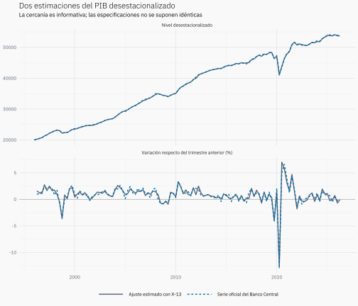
Código
ggplot(comparacion_bcch,aes(x =date, y =diferencia_nivel_pct))+geom_hline(yintercept =0, colour ="grey70")+geom_line(colour ="#586474", linewidth =0.65)+labs( title ="Diferencia entre las series desestacionalizadas", subtitle ="Ajuste estimado con X-13 respecto de la serie oficial", x =NULL, y ="Diferencia (%)")
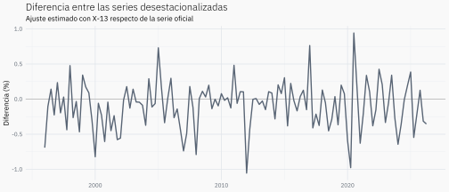
Para resumir la distancia se calculan RMSE y MAPE. El RMSE conserva la unidad de las series y el MAPE expresa su distancia media en porcentaje. En este contexto no miden precisión predictiva: comparan dos estimaciones contemporáneas del PIB desestacionalizado. La serie oficial no se trata como un valor verdadero ni como un conjunto de prueba.
Las diferencias pueden reflejar especificaciones, insumos, revisiones y decisiones de modelación distintas; no deben interpretarse automáticamente como errores de una de las dos series. La metodología oficial se describe en la Base de Datos Estadísticos del Banco Central.
8. Pronóstico como extensión opcional
El pronóstico normalmente no se realiza sobre el irregular. Si el irregular se comporta como ruido blanco, su esperanza futura es aproximadamente cero. El regARIMA pronostica la serie completa utilizando los regresores conocidos y la dinámica ARIMA estimada.
Nota¿Qué significa que el pronóstico sea opcional?
Publicar un pronóstico no es el objetivo del ajuste estacional: el producto principal ya se obtuvo con final(modelo). Sin embargo, X-13 puede usar pronósticos y backcasts internamente para extender los extremos de la serie y mejorar la estimación de los filtros. Aquí se muestran ocho trimestres futuros solo como un uso adicional del regARIMA estimado.
Con los datos actuales, X-13 seleccionó un SARIMA \((0,1,0)(0,1,1)_4\). El subíndice \(4\) indica que la frecuencia estacional es trimestral. Sus términos se leen así:
Término
Interpretación
\(p=0\)
No incluye términos autorregresivos no estacionales.
\(d=1\)
Aplica una primera diferencia: \(\Delta z_t=z_t-z_{t-1}\).
\(q=0\)
No incluye medias móviles no estacionales.
\(P=0\)
No incluye términos autorregresivos estacionales.
\(D=1\)
Aplica una diferencia estacional: compara con cuatro trimestres atrás.
\(Q=1\)
Incluye una media móvil estacional de las innovaciones en el rezago 4.
No es solamente “el trimestre anterior”. Primero se aplica la diferencia regular y luego la estacional:
La tabla siguiente aplica las dos diferencias a la serie linealizada. La primera reduce la evolución persistente del nivel; la segunda retira la dependencia que se repite cada cuatro trimestres.
Código
arima_paso_a_paso<-tibble( date =pib_original$date, linealizada =as.numeric(pib_linealizado))|>mutate( diferencia_regular =linealizada-lag(linealizada), diferencia_regular_estacional =diferencia_regular-lag(diferencia_regular, 4L))arima_paso_a_paso
# A tibble: 122 × 4
date linealizada diferencia_regular diferencia_regular_estacional
<date> <dbl> <dbl> <dbl>
1 1996-01-01 9.81 NA NA
2 1996-04-01 9.83 0.0128 NA
3 1996-07-01 9.79 -0.0401 NA
4 1996-10-01 9.88 0.0898 NA
5 1997-01-01 9.88 0.00293 NA
6 1997-04-01 9.89 0.0132 0.000448
7 1997-07-01 9.87 -0.0276 0.0125
8 1997-10-01 9.96 0.0970 0.00721
9 1998-01-01 9.95 -0.00887 -0.0118
10 1998-04-01 9.96 0.00657 -0.00666
# ℹ 112 more rows
Código
arima_paso_a_paso_ancho<-arima_paso_a_paso|>transmute(date, `1. Serie linealizada` =linealizada, `2. Primera diferencia` =diferencia_regular, `3. Diferencia regular y estacional` =diferencia_regular_estacional)arima_paso_a_paso_largo<-series_a_formato_largo(arima_paso_a_paso_ancho)ggplot(arima_paso_a_paso_largo,aes(x =date, y =value))+geom_line(linewidth =0.6)+facet_wrap(vars(serie), ncol =1, scales ="free_y")+labs(title ="Cómo el SARIMA transforma la serie linealizada", subtitle ="Las diferencias buscan una serie estacionaria antes de modelar las innovaciones", x =NULL, y =NULL)
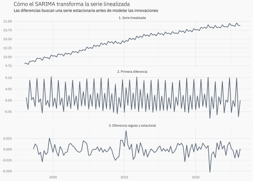
Al invertir las diferencias para pronosticar se obtiene, esquemáticamente:
porque la esperanza de una innovación futura es cero. La recurrencia con los rezagos 4 y 5 hace que el pronóstico de la serie completa conserve un patrón trimestral marcado. La persistencia del patrón procede principalmente de \(D=1\): el cambio de cada trimestre queda relacionado con el cambio del mismo trimestre del año anterior. El término \(Q=1\) corrige además los primeros horizontes mediante la innovación ocurrida cuatro trimestres atrás; no significa que simplemente se copie el trimestre inmediatamente anterior.
X-13 seleccionó esa estructura porque encontró dependencia estacional en la serie linealizada. El patrón futuro procede del SARIMA y, en menor medida, de los regresores futuros de calendario. No se obtiene sumando nuevamente la componente estacional estimada por SEATS. Si una actualización de los datos lleva a X-13 a seleccionar otro orden, esta ecuación también debe actualizarse.
8.2 Pronóstico de la serie completa
Para un horizonte \(h\), la predicción puntual puede escribirse como:
donde \(x_{T+h}^\top\widehat\beta\) aporta los efectos de regresión conocidos para el periodo futuro y \(\widehat z_{T+h\mid T}\) es el pronóstico ARIMA de la serie linealizada. La innovación futura no se suma a la predicción puntual porque su esperanza condicional es cero; su incertidumbre sí se refleja en los intervalos de pronóstico.
El objeto matriz_x guardado anteriormente sirve solo para inspeccionar la linealización; no se entrega manualmente a update(). Esta llamada vuelve a ejecutar la especificación regARIMA almacenada y X-13 reconstruye la matriz de regresores, incluidas sus filas para el horizonte futuro. En esas filas, un AO histórico vale cero porque su efecto se concentra en un trimestre, mientras que un LS histórico permanece activo porque representa un cambio de nivel. Por eso el LS puede aportar directamente a \(x_{T+h}^\top\widehat\beta\); el AO no se proyecta, aunque ambos hayan influido en la estimación de la serie linealizada y de su dinámica ARIMA.
Como la serie entregada a X-13 ya estaba en logaritmos y la transformación interna se desactivó, estos resultados permanecen en la escala logarítmica. La exponencial los devuelve a niveles; para interpretar la media condicional en niveles sería necesario considerar además la corrección por sesgo.
Código
pronostico_df<-as_tibble(as.data.frame(pronostico))|>slice_head(n =horizonte_pronostico)|>mutate( date =seq.Date( from =max(pib_original$date), by ="3 months", length.out =horizonte_pronostico+1L)[-1L], .before =1)pronostico_df
trayectoria_pronostico<-bind_rows(historial_pronostico|>slice_tail(n =1L)|>transmute(date,value, serie ="Pronóstico regARIMA"),pronostico_df|>transmute(date, value =forecast, serie ="Pronóstico regARIMA"))
Código
ggplot()+geom_ribbon( data =pronostico_df,aes(x =date, ymin =lowerci, ymax =upperci), fill ="#D55E00", alpha =0.15)+geom_line( data =historial_pronostico,aes(x =date, y =value, colour ="log(PIB) observado"), linewidth =0.7)+geom_line( data =trayectoria_pronostico,aes(x =date, y =value, colour =serie), linewidth =0.7)+scale_colour_manual(values =c("log(PIB) observado"="#586474","Pronóstico regARIMA"="#D55E00"))+labs(title ="log(PIB) observado y pronóstico regARIMA", subtitle ="Últimos diez años observados y ocho trimestres pronosticados", x =NULL, y =escala_modelo, colour =NULL)
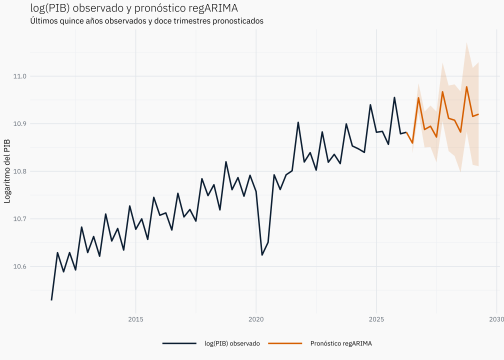
Se muestra el pronóstico junto a log(PIB) observado porque ambos representan la serie completa \(y_t\): X-13 vuelve a sumar \(X\beta\) al pronóstico ARIMA. La serie linealizada es una entrada intermedia y la desestacionalizada es otro producto; ninguna de ellas es el objetivo de forecast.forecasts.
ImportantePara pronosticar no se necesita la descomposición SEATS
Casi basta con llegar a la serie linealizada, pero todavía falta estimar su ARIMA. El recorrido mínimo es:
estimar conjuntamente \(\beta\) y el ARIMA mediante regARIMA;
construir \(z_t=y_t-X_t\beta\);
pronosticar \(z_t\) con el ARIMA;
sumar los efectos futuros \(X_{T+h}\beta\) para recuperar el pronóstico de \(y_{T+h}\).
SEATS no es necesario para ese pronóstico: su función es descomponer la serie y producir el ajuste estacional. Tampoco debe suponerse que el regARIMA elegido por X-13 será siempre el mejor modelo predictivo. Esa pregunta se responde mediante una evaluación fuera de muestra frente a alternativas como otros SARIMA, modelos estructurales, métodos multivariados o modelos de nowcasting.
Nota¿Qué aportan los outliers al pronóstico?
Frente a modelos ARIMA o ETS simples que utilizan únicamente la dinámica de la serie, el regARIMA de X-13 puede controlar explícitamente AO, LS y TC. ARIMA describe la autocorrelación mediante términos autorregresivos, diferencias y medias móviles. ETS, Error, Trend, Seasonal, es una familia de suavizamiento exponencial que actualiza nivel, tendencia y estacionalidad dando normalmente más peso a las observaciones recientes. Así, una observación excepcional no necesita ser explicada como si fuera autocorrelación normal, y un cambio de nivel no tiene que confundirse con estacionalidad o con un shock transitorio. Esto puede producir estimaciones y pronósticos más estables después de episodios como la crisis del COVID-19.
En particular, los LS permiten que la serie linealizada quede referida al régimen más reciente. Los AO históricos —y los TC, si se habilitan— se controlan al estimar la dinámica; sus valores futuros son cero salvo que se especifique una nueva intervención. Por eso X-13 puede evitar que los outliers pasados contaminen el pronóstico, pero no puede anticipar una crisis futura desconocida.
Esta capacidad no es exclusiva de X-13. Un ARIMAX, una regresión dinámica o un modelo estructural también pueden incorporar intervenciones si se especifican. La ventaja práctica de X-13 es integrar su detección, estimación y diagnóstico con el regARIMA y el ajuste estacional.
8.3 ¿Se pueden incorporar series internacionales?
Sí. Un regARIMA puede ampliarse con regresores externos \(w_t\), por ejemplo actividad mundial, precio del cobre, términos de intercambio o tasas externas:
Ajustar estacionalmente: conviene reservar \(X_t\) principalmente para calendario, feriados, outliers y otros efectos que realmente se desea retirar. Incluir una variable internacional solo porque predice el PIB podría eliminar parte del ciclo económico que justamente interesa conservar.
Pronosticar: después de obtener la serie desestacionalizada, puede construirse otro modelo dinámico que use variables locales e internacionales. Para este objetivo pueden ser apropiados un ARIMAX, una regresión dinámica, un ARDL, un modelo de corrección de error o un modelo multivariado.
Antes de incorporar una serie externa conviene revisar:
Transformación y estacionariedad. Una regresión entre series en niveles con tendencias puede ser espuria. Si ambas parecen integradas, debe estudiarse si existe cointegración; si no existe, suelen utilizarse diferencias o tasas de crecimiento.
Cointegración. Si existe una relación económica de largo plazo entre variables no estacionarias, un modelo de corrección de error puede conservar esa relación y modelar simultáneamente los ajustes de corto plazo.
Rezagos. La correlación contemporánea no determina el rezago correcto. Deben combinarse el mecanismo económico, la fecha real de publicación y una evaluación de distintos rezagos.
Correlación cruzada. No conviene calcularla directamente sobre series en niveles con tendencia o estacionalidad. Primero se estacionarizan o preblanquean las series; después se examina su correlación cruzada para evitar relaciones aparentes.
Disponibilidad futura. Para pronosticar \(y_{T+h}\) se necesitan valores o escenarios de \(w_{T+h}\). Si la variable internacional se publica más tarde o también debe pronosticarse, esa incertidumbre forma parte del problema.
Evaluación fuera de muestra. La utilidad final se comprueba comparando errores de pronóstico en ventanas históricas y evitando utilizar información que todavía no estaba disponible en cada fecha.
Por tanto, una serie internacional puede aportar contexto y capacidad predictiva, pero no debe incluirse solo porque muestra una correlación alta. La decisión necesita una justificación económica, tratamiento temporal adecuado y evidencia fuera de muestra.
Resumen conceptual
La receta completa puede leerse así, sin olvidar que los parámetros de la regresión y del ARIMA se estiman conjuntamente:
Serie observada y transformación. X-13 puede escoger automáticamente entre trabajar en niveles o aplicar logaritmos mediante transform.function = "auto". Aquí se aplica log() antes de llamar a X-13 y luego se usa transform.function = "none" para hacer explícita la escala: \(y_t=\log(Y_t)\). En esta escala la descomposición se expresa mediante sumas y las componentes estacional e irregular fluctúan alrededor de cero, lo que facilita su visualización pedagógica.
Preajuste regARIMA. X-13 representa la observada como \(y_t=x_t^\top\beta+z_t\), donde \(X\beta\) contiene calendario y outliers.
Serie linealizada. Se retiran temporalmente esos efectos: \(z_t=y_t-x_t^\top\beta\). Esta serie todavía conserva la estacionalidad.
Dinámica ARIMA. El ARIMA modela la dependencia temporal de \(z_t\) y deja innovaciones \(\varepsilon_t\) que deberían parecer ruido blanco.
Descomposición SEATS. Sobre la linealizada se estima \(z_t=T_t+S_t+I_t\).
Serie desestacionalizada interna. Se elimina solamente la estacionalidad: \(z_t^{SA}=z_t-S_t=T_t+I_t\).
Resultado final de X-13. Los outliers seleccionados —AO y LS en esta especificación; también TC si se habilita— se reincorporan por defecto porque forman parte de la historia económica. No se reincorporan la estacionalidad ni los efectos de calendario, como Weekday, Leap.Year y feriados: esos permanecen retirados para permitir comparaciones entre trimestres consecutivos.
En una aplicación real no es necesario reconstruir \(X\beta\), las diferencias ARIMA ni cada identidad mostrada en este documento. Una vez limpia y ordenada la serie, las funciones esenciales son:
Qtr1 Qtr2 Qtr3 Qtr4
1996 NA NA NA NA
1997 NA NA NA NA
1998 NA NA NA ls1998.4
1999 NA NA NA NA
2000 NA NA NA NA
2001 NA NA NA NA
2002 NA NA NA NA
2003 NA NA NA NA
2004 NA NA NA NA
2005 NA NA NA NA
2006 NA NA NA NA
2007 NA NA NA NA
2008 NA NA NA NA
2009 NA NA NA NA
2010 NA NA NA NA
2011 NA NA NA NA
2012 NA NA NA NA
2013 NA NA NA NA
2014 NA NA NA NA
2015 NA NA NA NA
2016 NA NA NA NA
2017 NA NA NA NA
2018 NA NA NA NA
2019 NA NA NA ls2019.4
2020 NA ls2020.2 ls2020.3 ls2020.4
2021 NA NA ls2021.3 NA
2022 NA NA NA NA
2023 NA NA NA NA
2024 NA NA NA NA
2025 NA NA NA NA
2026 NA NA
Esta versión parte del PIB en niveles y usa transform.function = "auto". Por eso X-13 puede escoger una transformación y un modelo distintos de los del recorrido pedagógico, donde el logaritmo se aplicó explícitamente y se fijó transform.function = "none" para poder observar una descomposición aditiva.
En términos operativos, stats::ts() + seas() + final() constituyen el núcleo. El resto sirve para diagnosticar, interpretar o reutilizar resultados.
Los números identifican generaciones de programas y métodos; no significan once o doce meses. También pueden utilizarse con series trimestrales.
Nombre
Qué es
Función principal
X-11
Método de ajuste estacional basado en filtros lineales iterativos
Usa medias móviles para estimar sucesivamente tendencia, estacionalidad e irregular.
X-12-ARIMA
Programa que amplió X-11
Agrega el preajuste de regresión con errores ARIMA, detección de outliers y extensiones mediante pronósticos antes de aplicar X-11.
X-13ARIMA-SEATS
Programa actual que amplía X-12-ARIMA
Permite realizar el preajuste regARIMA y escoger entre la descomposición X-11 o SEATS.
SEATS
Método alternativo de descomposición incluido en X-13
Extrae tendencia, estacionalidad e irregular utilizando la estructura del modelo ARIMA.
ImportanteLas medias móviles no construyen la serie linealizada
La linealización ocurre antes y pertenece al regARIMA:
\[
z_t=y_t-x_t^\top\beta.
\]
Después de obtener \(z_t\), X-13 puede descomponerla por uno de dos caminos:
X-11 aplica filtros de medias móviles de manera iterativa;
SEATS, que es el camino utilizado en este documento, usa la estructura ARIMA para extraer las señales \(T_t\), \(S_t\) e \(I_t\).
En X-12-ARIMA y X-13, los pronósticos y backcasts del ARIMA también pueden extender los extremos de la serie. Esto ayuda a aplicar los filtros de X-11 cerca del inicio y del final, donde no existen observaciones a ambos lados; no es el paso que elimina \(X\beta\).